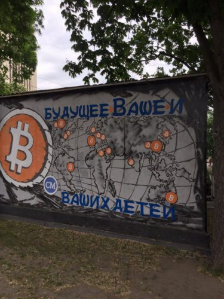

Если взять людей из моего окружения, то о биткойнах слышал, наверное, каждый. Но, если начать говорить с моим средним знакомым о биткойне, то вряд ли разговор продлится дольше одной минуты.
Теория
Все знания о криптовалютах, одной из которых, и является биткоин — сводятся к тому, что его хотят то ли разрешить, то ли запретить. А, между тем, общая капитализация рынка криптовалюты на 25 мая 2017 года превысила $80 млрд, а стоимость биткоинов оценивается в $44 млрд. Для сравнения, капитализация Газпрома на начало 2017 года равнялась примерно $60 млрд.

Биткойны появились всего 8 лет назад, в 2009 году. Чтобы лучше понять, что такое биткойны, лучше всего их сравнивать с золотом. Как и золото, биткойны можно «добывать» (майнить). Для этого используются вычислительные мощности компьютеров.
Сразу после появления биткойны можно было генерировать на обычных ПК, для этого в первых версиях программы-клиента была кнопка, на которой так и было написано «Сгенерировать новые биткойны». Шансы на генерацию биткойнов равняются отношению вычислительной мощности конкретного процессора к вычислительной мощности всей сети. Поэтому для генерации биткойнов сначала стали использовать более дешёвые, но более мощные видеокарты, затем появились специальные процессоры для генерации биткойнов. Сегодня этим занимаются специально построенные пулы (безлюдные фабрики биткойнов), большинство из которых находится в Китае. Говорить о генерации биткойнов в домашних условиях уже не приходится.
Говорить о генерации биткойнов в домашних условиях уже не приходится.
С каждым сгенерированным биткойном вероятность появления следующего уменьшается. Общий объём эмиссии биткойнов ограничен, и не превысит 21 миллион.
Сама система биткойнов построена на технологии блокчейн. Нет ни одного человека или компьютера в мире, который бы был ответственен за выпуск новых биткойнов или хранил информацию обо всех кошельках. Их существование не может быть регулировано ни одним из правительств. Для того, чтобы обладать биткойнами не нужна регистрация с предъявлением паспортных данных. В то же время, нужно понимать, что сделки с биткойнами необратимы. В этом смысле будет удобней сравнивать биткойны с бумажными деньгами. У кого деньги в кошельке, тот и владеет ими.
Транзакции с биткойнами в большей степени анонимны. Для получения денег вам нужно сгенерировать новый номер кошелька, который может быть использован лишь однажды.
Практика
В течение мая биткойн вырос в цене практически в два раза. C $1300 до $2700.

Другими словами, если бы вы потратили 1 мая на покупку биткойнов 100 тысяч рублей, то смогли бы выручить 25 мая уже 200 тысяч.
Специалисты связывают скачок в цене с тем, что в апреле японские власти признали биткойн законным платёжным средством. Кроме этого вырос интерес к криптовалютам со стороны китайских инвесторов.
Правда уже в пятницу, после стремительного роста, курс упал почти на $400.
Такие инвестиционные возможности не могли пройти мимо меня, и я решился познакомиться наконец с биткойном поближе, и потратить на их покупку целую 1000 рублей.
На деле это оказалось не очень сложно. Вопроса, которые пришлось решить, — два:
Хранение биткойнов
Существует два распространённых способа хранения ваших биткойнов:
1. Кошелёк размещён на вашем компьютере. Здесь тоже два варианта:
— Полноценный кошелёк, гарантирующий максимальную анонимность, например Bitcoin Core. Кошелёк будет содержать все цепочки блоков транзакций. Такой кошелёк займёт на вашем компьютере более 65 Гб пространства и с ростом количества транзакций этот объём будет расти.
— Кошелёк, который загружает только необходимые для работы данные, а данные о транзакциях отправляет на централизованные серверы. Самый популярный из таких кошельков — Electrum. Установить его можно практически на любую операционную систему, в том числе на Android.
При размещении кошелька на своём компьютере вы берёте на себя все риски связанные с хранением денег. Проще всего сравнить этот вариант с бумажными деньгами, которые лежат у вас дома в тумбочке. Деньги могут пропасть в результате кражи компьютера, работы вируса, или поломки винчестера.
2. Кошелёк размещён на одном из веб-сервисов. Наиболее лёгкий и простой вариант. Вы получаете доступ к вашим деньгами из любого места, где есть интернет, но должны доверять веб-сервису целиком. Этот вариант можно сравнить с хранением денег в банке. Кроме того, что ваш вклад не застрахован никаким агентством по страхованию.
Наиболее известный онлайн-сервис — Blockchain
Для первого опыта я остановился на втором варианте.
Покупка биткойнов
Купить биткойны тоже оказалось несложно. Правда, экономически это выходит не так выгодно как хотелось бы. Дело в большой курсовой разнице между курсами покупки и продажи биткойна за рубли.
На момент написания этого поста биржевой курс равен 121 654 рублей за 1 биткойн
Самый выгодный курс покупки за рубли с кошелька Яндекс.Деньги — 129 677 за 1 биткойн
То есть при покупке вы теряете порядка 10%, включая комиссию платёжной системы.
Я покупал биткойны с Кошелька Киви. Там курс ещё менее выгодный.
В интернете есть десятки обменников, где можно купить биткойны за какие угодно деньги: Webmoney, Киви, Яндекс, оплатить покупку картой или с банковского счёта. Самый выгодный курс удобней всего отслеживать на сервисе BestChange
Потратив 1000 рублей, я получил 0.00657009 BTC, что на тот момент равнялось 874 рублям.

Уверен, криптовалюты не ждёт безоблачное будущее. Их роль в экономике напрямую зависит от признания такого вида расчётов обществом, правительствами в том числе. Но на сегодняшний день я не вижу предпосылок, чтобы курс биткойна падал даже в среднесрочной (2-3 года) перспективе.
А значит, может быть стоит купить 1 BTC уже сегодня. Говорят к 2030 году он будет стоить $500 000.